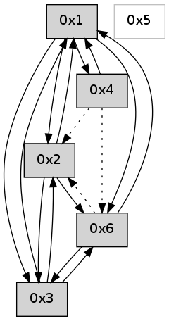

>> << IDX [start] -100 -25 -5 +0 +5 +25 +100 [595.108402014]
 Previous packets
----------------------------------------------------------------------
590.187317 beacon01(adaf) #0 coord=01,02,05,03,04,06 cycle=432.0ms assoc
-- color-indic=0 64 c1 97
590.197278 beacon02(adaf) #0 coord=01,02,05,03,04,06 cycle=432.0ms assoc 64 90 68
590.207278 beacon05(adaf) #0 coord=01,02,05,03,04,06 cycle=432.0ms assoc 64 36 42
590.217278 beacon03(adaf) #0 coord=01,02,05,03,04,06 cycle=432.0ms assoc 64 aa 66
590.227278 beacon04(adaf) #0 coord=01,02,05,03,04,06 cycle=432.0ms assoc 64 0c 4c
590.237280 beacon06(adaf) #0 coord=01,02,05,03,04,06 cycle=432.0ms assoc 64 78 50
590.248955 [Hello(2): seq=885 sym=6,1,3 sysInfo= stat=6:1,0,0,0/1:5,0,0,0/3:5,0,0,0]
----------------------------------------------------------------------
590.679426 beacon01(adaf) #0 coord=01,02,05,03,04,06 cycle=432.0ms assoc
-- color-indic=0 64 8c 90
590.689387 beacon02(adaf) #0 coord=01,02,05,03,04,06 cycle=432.0ms assoc 64 dd 6f
590.699387 beacon05(adaf) #0 coord=01,02,05,03,04,06 cycle=432.0ms assoc 64 7b 45
590.709388 beacon03(adaf) #0 coord=01,02,05,03,04,06 cycle=432.0ms assoc 64 e7 61
590.719389 beacon04(adaf) #0 coord=01,02,05,03,04,06 cycle=432.0ms assoc 64 41 4b
590.729387 beacon06(adaf) #0 coord=01,02,05,03,04,06 cycle=432.0ms assoc 64 35 57
590.740208 [Hello(1): seq=290 sym=2,3,6,4 sysInfo= stat=2:1,0,0,0/3:3,0,0,0/6:2,0,0,0/4:0,0,0,0]
590.744760 [Hello(4): seq=391 sym=6 asym=1,2 sysInfo= stat=6:9,0,0,0/1:0,0,0,0/2:14,0,0,0]
----------------------------------------------------------------------
591.171534 beacon01(adaf) #0 coord=01,02,05,03,04,06 cycle=432.0ms assoc
-- color-indic=0 64 48 ff
591.181494 beacon02(adaf) #0 coord=01,02,05,03,04,06 cycle=432.0ms assoc 64 19 00
591.191495 beacon05(adaf) #0 coord=01,02,05,03,04,06 cycle=432.0ms assoc 64 bf 2a
591.201494 beacon03(adaf) #0 coord=01,02,05,03,04,06 cycle=432.0ms assoc 64 23 0e
591.211495 beacon04(adaf) #0 coord=01,02,05,03,04,06 cycle=432.0ms assoc 64 85 24
591.221495 beacon06(adaf) #0 coord=01,02,05,03,04,06 cycle=432.0ms assoc 64 f1 38
591.233167 [Hello(2): seq=886 sym=6,1,3 sysInfo= stat=6:1,0,0,0/1:6,0,0,0/3:6,0,0,0]
----------------------------------------------------------------------
591.663643 beacon01(adaf) #0 coord=01,02,05,03,04,06 cycle=432.0ms assoc
-- color-indic=0 64 04 4f
591.673606 beacon02(adaf) #0 coord=01,02,05,03,04,06 cycle=432.0ms assoc 64 55 b0
591.683604 beacon05(adaf) #0 coord=01,02,05,03,04,06 cycle=432.0ms assoc 64 f3 9a
591.693606 beacon03(adaf) #0 coord=01,02,05,03,04,06 cycle=432.0ms assoc 64 6f be
591.703606 beacon04(adaf) #0 coord=01,02,05,03,04,06 cycle=432.0ms assoc 64 c9 94
591.713606 beacon06(adaf) #0 coord=01,02,05,03,04,06 cycle=432.0ms assoc 64 bd 88
591.724421 [Hello(1): seq=291 sym=2,3,6,4 sysInfo= stat=2:2,0,0,0/3:4,0,0,0/6:2,0,0,0/4:0,0,0,0]
591.728964 [Hello(4): seq=392 asym=6,1,2 sysInfo= stat=6:10,0,0,0/1:0,0,0,0/2:14,0,0,0]
----------------------------------------------------------------------
592.155752 beacon01(adaf) #0 coord=01,02,05,03,04,06 cycle=432.0ms assoc
-- color-indic=0 64 c0 20
592.165712 beacon02(adaf) #0 coord=01,02,05,03,04,06 cycle=432.0ms assoc 64 91 df
592.175714 beacon05(adaf) #0 coord=01,02,05,03,04,06 cycle=432.0ms assoc 64 37 f5
592.185714 beacon03(adaf) #0 coord=01,02,05,03,04,06 cycle=432.0ms assoc 64 ab d1
592.195714 beacon04(adaf) #0 coord=01,02,05,03,04,06 cycle=432.0ms assoc 64 0d fb
592.205714 beacon06(adaf) #0 coord=01,02,05,03,04,06 cycle=432.0ms assoc 64 79 e7
592.217399 [Hello(2): seq=887 sym=6,1,3 sysInfo= stat=6:1,0,0,0/1:7,0,0,0/3:7,0,0,0]
----------------------------------------------------------------------
592.647860 beacon01(adaf) #0 coord=01,02,05,03,04,06 cycle=432.0ms assoc
-- color-indic=0 64 b8 8d
592.657821 beacon02(adaf) #0 coord=01,02,05,03,04,06 cycle=432.0ms assoc 64 e9 72
592.667822 beacon05(adaf) #0 coord=01,02,05,03,04,06 cycle=432.0ms assoc 64 4f 58
592.677821 beacon03(adaf) #0 coord=01,02,05,03,04,06 cycle=432.0ms assoc 64 d3 7c
592.687822 beacon04(adaf) #0 coord=01,02,05,03,04,06 cycle=432.0ms assoc 64 75 56
592.697822 beacon06(adaf) #0 coord=01,02,05,03,04,06 cycle=432.0ms assoc 64 01 4a
592.709517 [Hello(4): seq=393 asym=6,1,2 sysInfo= stat=6:10,0,0,0/1:0,0,0,0/2:15,0,0,0]
592.712424 [Hello(1): seq=292 sym=2,3,6,4 sysInfo= stat=2:3,0,0,0/3:4,0,0,0/6:2,0,0,0/4:1,0,0,0]
----------------------------------------------------------------------
593.139968 beacon01(adaf) #0 coord=01,02,05,03,04,06 cycle=432.0ms assoc
-- color-indic=0 64 7c e2
593.149929 beacon02(adaf) #0 coord=01,02,05,03,04,06 cycle=432.0ms assoc 64 2d 1d
593.159929 beacon05(adaf) #0 coord=01,02,05,03,04,06 cycle=432.0ms assoc 64 8b 37
593.169929 beacon03(adaf) #0 coord=01,02,05,03,04,06 cycle=432.0ms assoc 64 17 13
593.179931 beacon04(adaf) #0 coord=01,02,05,03,04,06 cycle=432.0ms assoc 64 b1 39
593.189930 beacon06(adaf) #0 coord=01,02,05,03,04,06 cycle=432.0ms assoc 64 c5 25
593.201609 [Hello(2): seq=888 sym=6,1,3 sysInfo= stat=6:1,0,0,0/1:8,0,0,0/3:8,0,0,0]
----------------------------------------------------------------------
593.632077 beacon01(adaf) #0 coord=01,02,05,03,04,06 cycle=432.0ms assoc
-- color-indic=0 64 30 52
593.642040 beacon02(adaf) #0 coord=01,02,05,03,04,06 cycle=432.0ms assoc 64 61 ad
593.652038 beacon05(adaf) #0 coord=01,02,05,03,04,06 cycle=432.0ms assoc 64 c7 87
593.662039 beacon03(adaf) #0 coord=01,02,05,03,04,06 cycle=432.0ms assoc 64 5b a3
593.672040 beacon04(adaf) #0 coord=01,02,05,03,04,06 cycle=432.0ms assoc 64 fd 89
593.682041 beacon06(adaf) #0 coord=01,02,05,03,04,06 cycle=432.0ms assoc 64 89 95
593.693458 [Hello(1): seq=293 sym=2,3,6,4 sysInfo= stat=2:4,0,0,0/3:4,0,0,0/6:2,0,0,0/4:1,0,0,0]
593.697386 [Hello(4): seq=394 sym=1 asym=6,2 sysInfo= stat=1:1,0,0,0/6:10,0,0,0/2:0,0,0,0]
----------------------------------------------------------------------
594.124187 beacon01(adaf) #0 coord=01,02,05,03,04,06 cycle=432.0ms assoc
-- color-indic=0 64 f4 3d
594.134148 beacon02(adaf) #0 coord=01,02,05,03,04,06 cycle=432.0ms assoc 64 a5 c2
594.144148 beacon05(adaf) #0 coord=01,02,05,03,04,06 cycle=432.0ms assoc 64 03 e8
594.154148 beacon03(adaf) #0 coord=01,02,05,03,04,06 cycle=432.0ms assoc 64 9f cc
594.164149 beacon04(adaf) #0 coord=01,02,05,03,04,06 cycle=432.0ms assoc 64 39 e6
594.174151 beacon06(adaf) #0 coord=01,02,05,03,04,06 cycle=432.0ms assoc 64 4d fa
594.185824 [Hello(2): seq=889 sym=6,1,3 sysInfo= stat=6:1,0,0,0/1:9,0,0,0/3:9,0,0,0]
----------------------------------------------------------------------
594.616294 beacon01(adaf) #0 coord=01,02,05,03,04,06 cycle=432.0ms assoc
-- color-indic=0 64 b9 3a
594.626255 beacon02(adaf) #0 coord=01,02,05,03,04,06 cycle=432.0ms assoc 64 e8 c5
594.636257 beacon05(adaf) #0 coord=01,02,05,03,04,06 cycle=432.0ms assoc 64 4e ef
594.646256 beacon03(adaf) #0 coord=01,02,05,03,04,06 cycle=432.0ms assoc 64 d2 cb
594.656257 beacon04(adaf) #0 coord=01,02,05,03,04,06 cycle=432.0ms assoc 64 74 e1
594.666256 beacon06(adaf) #0 coord=01,02,05,03,04,06 cycle=432.0ms assoc 64 00 fd
594.677899 [Hello(3): seq=394 sym=2,1,6 sysInfo= stat=2:2,0,0,0/1:2,0,0,0/6:2,0,0,0]
594.681605 [Hello(4): seq=395 sym=1 asym=6,2 sysInfo= stat=1:1,0,0,0/6:11,0,0,0/2:0,0,0,0]
594.684692 [Hello(1): seq=294 sym=2,3,6,4 sysInfo= stat=2:5,0,0,0/3:5,0,0,0/6:2,0,0,0/4:1,0,0,0]